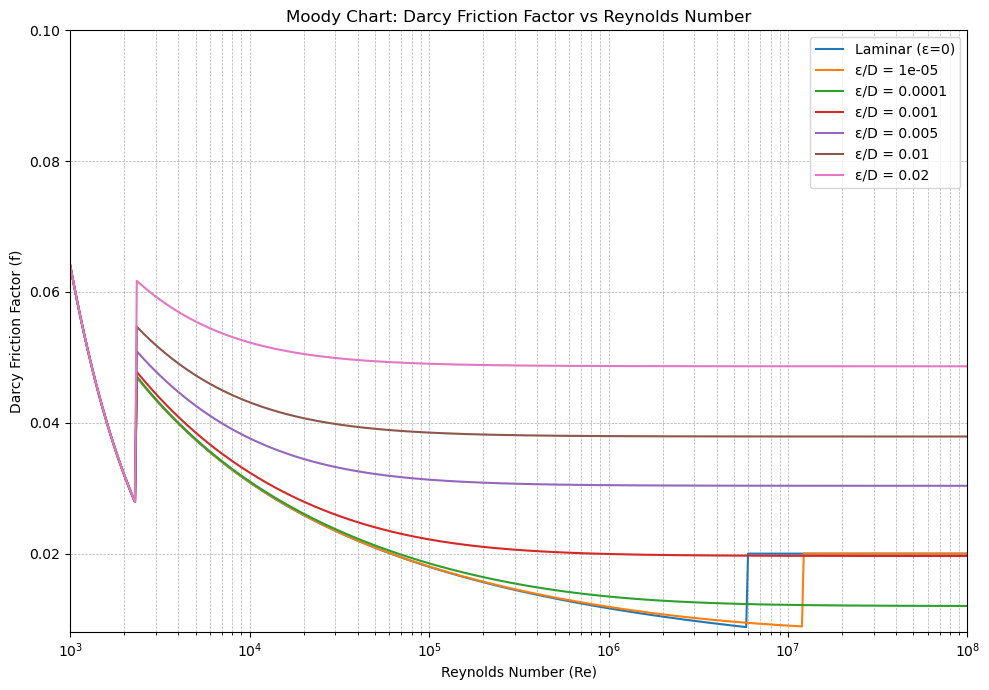

Chapter 3 Hydraulics: Pipe Hydraulics#
1. Introduction#
🌊 Head Loss in Pipes: Concepts, Estimation & Applications#

📘 What Is Head Loss?#
Head loss refers to the reduction in total head (hydraulic energy) of a fluid as it flows through a pipe system. It arises from:
Frictional losses: caused by pipe wall resistance (major losses)
Local disturbances: such as bends, valves, fittings (minor losses)
Head loss is expressed in units of length (meters or feet), indicating the height of fluid lost due to resistance.
📐 Estimating or Measuring Head Loss#
1. Empirical Formulas#
🔸 Darcy–Weisbach Equation (General Use)#
\(( h_f \)): head loss
\(( f \)): friction factor
\(( L \)): pipe length
\(( D \)): pipe diameter
\(( v \)): flow velocity
\(( g \)): gravitational acceleration
🔸 Hazen–Williams Equation (For Water)#
Best suited for turbulent water flow in municipal systems
2. Minor Losses#
\(( K \)): fitting/valve loss coefficient
Used for elbows, tees, reducers, valves, etc.
3. Measurement Methods#
Pressure gauge readings across pipe sections
Flow meters with energy grade line tracking
Manometers for lab setups
🧭 Importance of Head Loss#
🔹 Design Optimization#
Determines pump power and pipe sizing
🔹 Operational Monitoring#
Aids in troubleshooting and system performance tracking
🔹 Energy Efficiency#
Lower head loss means reduced operational
Type 1 Problem#
🔍 Summary – Head Loss Calculator for Flow Through Piles (Jupyter Interactive)#
💡 What It Is#
-A jupyter-basedinterative tool to lot the Moodys chart to estimate the darcy friction factor based on Ryenold number and Rouhness.
-A Jupyter-based interactive tool that estimates hydraulic head loss when fluid flows through a group of piles. It uses sliders to define flow and pile parameters, and applies the Darcy-Weisbach equation for pressure drop.
⚙️ How It Works#
Calculates flow velocity from total cross-sectional area of all piles.
Applies the Darcy-Weisbach formula: [$\( h_f = f \cdot \frac{L}{D} \cdot \frac{v^2}{2g} \)$
Updates results instantly when you click “Calculate Head Loss.”
🧾 Inputs#
Parameter |
Description |
|---|---|
|
Flow rate (m³/s) |
|
Diameter of each pile (m) |
|
Length of each pile (m) |
|
Total piles in the group |
|
Friction factor (dimensionless) |
📈 Outputs#
Output Item |
Meaning |
|---|---|
|
Total pressure drop across pile group |
|
Input flow rate used for calculation |
|
Group properties contributing to resistance |
|
Used to model flow resistance |
Use this tool to analyze energy losses through pile-supported structures or porous flow regions, especially useful in foundation hydraulics or marine engineering.
Friction Factor Estimtion: Moodys Chart#
import numpy as np
import matplotlib.pyplot as plt
from scipy.optimize import fsolve
# Define Reynolds number range
Re = np.logspace(3, 8, 500)
relative_roughness = [0.0, 0.00001, 0.0001, 0.001, 0.005, 0.01, 0.02] # Typical values
def colebrook(f, Re, eD):
return 1/np.sqrt(f) + 2.0*np.log10(eD/3.7 + 2.51/(Re*np.sqrt(f)))
def compute_friction_factor(Re, eD):
f = np.zeros_like(Re)
for i, r in enumerate(Re):
if r < 2300:
f[i] = 64.0 / r # Laminar flow
else:
f_initial_guess = 0.02
f[i] = fsolve(colebrook, f_initial_guess, args=(r, eD))[0]
return f
# Plotting
plt.figure(figsize=(10, 7))
for eD in relative_roughness:
f = compute_friction_factor(Re, eD)
label = f"ε/D = {eD}" if eD != 0 else "Laminar (ε=0)"
plt.semilogx(Re, f, label=label)
plt.xlabel("Reynolds Number (Re)")
plt.ylabel("Darcy Friction Factor (f)")
plt.title("Moody Chart: Darcy Friction Factor vs Reynolds Number")
plt.grid(True, which='both', linestyle='--', linewidth=0.5)
plt.legend()
plt.xlim(1e3, 1e8)
plt.ylim(0.008, 0.1)
plt.tight_layout()
plt.show()
C:\Users\satis\AppData\Local\Temp\ipykernel_27556\1374860575.py:10: RuntimeWarning: invalid value encountered in sqrt
return 1/np.sqrt(f) + 2.0*np.log10(eD/3.7 + 2.51/(Re*np.sqrt(f)))
C:\Users\satis\AppData\Local\Temp\ipykernel_27556\1374860575.py:19: RuntimeWarning: The iteration is not making good progress, as measured by the
improvement from the last ten iterations.
f[i] = fsolve(colebrook, f_initial_guess, args=(r, eD))[0]

import ipywidgets as widgets
from IPython.display import display, Markdown
import math
# --- Darcy-Weisbach head loss function ---
def head_loss(Q, D, L, n, f, g=9.81):
# Convert flow rate Q (m³/s) to velocity
A = (math.pi * D**2 / 4) * n # total cross-sectional flow area through all piles
if A == 0:
return 0.0
v = Q / A # flow velocity per pile group
h_f = f * (L / D) * (v**2 / (2 * g)) # Darcy-Weisbach equation
return h_f
# --- Interactive widgets ---
Q_slider = widgets.FloatSlider(value=0.1, min=0.001, max=2.0, step=0.01, description='Flow Q (m³/s)')
D_slider = widgets.FloatSlider(value=0.3, min=0.05, max=2.0, step=0.01, description='Pile Dia (m)')
L_slider = widgets.FloatSlider(value=5.0, min=0.5, max=30.0, step=0.5, description='Pile Len (m)')
n_slider = widgets.IntSlider(value=4, min=1, max=100, step=1, description='No. of Piles')
f_slider = widgets.FloatSlider(value=0.02, min=0.005, max=0.1, step=0.001, description='Friction f')
button = widgets.Button(description='Calculate Head Loss')
output = widgets.Output()
def on_click(b):
with output:
output.clear_output()
Q = Q_slider.value
D = D_slider.value
L = L_slider.value
n = n_slider.value
f = f_slider.value
h = head_loss(Q, D, L, n, f)
display(Markdown(
f"### 🧮 Estimated Head Loss: `{h:.3f} m`\n"
f"- Flow Rate: `{Q} m³/s`\n"
f"- Total Piles: `{n}` | Diameter: `{D} m` | Length: `{L} m`\n"
f"- Friction Factor: `{f}`"
))
button.on_click(on_click)
display(widgets.VBox([
widgets.HTML("<h3>🔧 Head Loss Calculator for Flow Through Piles</h3>"),
Q_slider, D_slider, L_slider, n_slider, f_slider,
button, output
]))
Type 5 Problem: Design#
🔍 Summary – Pipe Diameter Design Calculator (Jupyter Interactive)#
💡 What It Is#
A Jupyter Notebook tool that calculates the required pipe diameter for a given flow rate, pipe material, length, and head loss. It uses interactive widgets to input data and outputs key hydraulic parameters.
⚙️ How It Works#
Uses the Darcy-Weisbach equation and Swamee-Jain friction factor to solve for:
Pipe diameter needed to match head loss
Flow velocity
Reynolds number
Friction factor
Iterates via Newton-style update until pressure loss matches input.
🧾 Inputs#
Parameter |
Description |
|---|---|
|
Flow rate |
|
Pipe length |
|
Desired pressure drop |
|
Pipe material (roughness coefficient) |
📈 Output Interpretation#
Output Item |
Meaning |
|---|---|
|
Minimum pipe size needed to carry the flow |
|
Speed of flow within the pipe |
|
Flow regime: laminar (<2300) or turbulent |
|
Coefficient used in head loss calculation |
Use this tool to design pipe systems that meet hydraulic constraints based on flow, material, and pressure requirements.
# 📌 Pipe Design Calculator – Jupyter Version
import math
import ipywidgets as widgets
from IPython.display import display, Markdown
# 🔧 Roughness values by material (meters)
roughness = {
'PVC': 0.0000015,
'Steel': 0.000045,
'Cast Iron': 0.00026,
'Concrete': 0.0003,
'Copper': 0.0000015
}
# 🧮 Friction factor estimation (Swamee-Jain)
def friction_factor(e, D, Re):
if Re < 2300: # Laminar flow
return 64 / Re
return 0.25 / (math.log10(e/(3.7*D) + 5.74/Re**0.9))**2
# 🔁 Solver for pipe diameter
def solve_diameter(Q, L, material, head_loss, nu=1e-6, g=9.81):
e = roughness.get(material, 0.000045)
D = 0.05 # Initial guess
for _ in range(100):
A = math.pi * D**2 / 4
v = Q / A
Re = v * D / nu
f = friction_factor(e, D, Re)
hf_calc = f * (L / D) * (v**2 / (2 * g))
D += 0.001 * (head_loss - hf_calc)
D = max(D, 0.01)
return D, v, f, Re
# 📊 Interactive widgets
Q_slider = widgets.FloatSlider(value=0.05, min=0.001, max=2.0, step=0.001, description='Q (m³/s)')
L_slider = widgets.FloatSlider(value=30, min=1, max=200, step=1, description='Length (m)')
hf_slider = widgets.FloatSlider(value=5.0, min=0.1, max=30.0, step=0.1, description='Head Loss (m)')
material_dd = widgets.Dropdown(options=list(roughness.keys()), value='PVC', description='Material')
button = widgets.Button(description='Calculate Diameter')
output = widgets.Output()
# 🧠 Button logic
def on_button_click(b):
with output:
output.clear_output()
Q = Q_slider.value
L = L_slider.value
hf = hf_slider.value
material = material_dd.value
D, v, f, Re = solve_diameter(Q, L, material, hf)
display(Markdown(f"""
### ✅ Pipe Design Result
- **Material**: `{material}`
- **Flow Rate**: `{Q:.3f} m³/s` | **Length**: `{L} m` | **Head Loss**: `{hf} m`
- **Required Diameter**: `{D:.3f} m`
- **Velocity**: `{v:.2f} m/s` | **Reynolds Number**: `{Re:.0f}`
- **Friction Factor**: `{f:.3f}`
"""))
button.on_click(on_button_click)
# 🖥️ Display layout
display(widgets.VBox([
widgets.HTML("<h3>🚰 Pipe Diameter Design Calculator</h3>"),
Q_slider, L_slider, hf_slider, material_dd, button, output
]))
Simulation#
🔍 Summary – Compound Pipe Head Loss Calculator (Jupyter Interactive)#
💡 What It Is#
An interactive Jupyter Notebook tool that calculates the total head loss across a series of connected pipe segments. Each segment can have its own length, diameter, flow rate, and roughness coefficient.
⚙️ How It Works#
Uses the Darcy-Weisbach equation and Swamee-Jain formula to compute:
Flow velocity
Reynolds number
Friction factor
Head loss per segment
Dynamically adjusts the number of pipe segments (1–6) using a slider
Inputs are entered via text boxes for each segment:
L: Length in metersD: Diameter in metersQ: Flow rate in m³/se: Roughness in meters
On clicking “Calculate Total Head Loss”, it:
Computes individual losses for each segment
Displays velocity, flow regime, and friction factor
Sums the losses and outputs total system head loss
📈 How to Interpret Results#
Output Element |
Meaning |
|---|---|
Velocity (m/s) |
Speed of flow through each segment |
Reynolds Number |
Flow regime: laminar (<2300) or turbulent |
Friction Factor |
Based on pipe roughness and turbulence |
Segment Head Loss (m) |
Pressure drop per pipe segment |
Total Head Loss (m) |
Overall system loss due to friction |
Use it to evaluate multi-pipe systems in civil, environmental, or mechanical applications.
# 📘 Interactive Compound Pipe Head Loss Calculator – Jupyter Notebook
import math
import ipywidgets as widgets
from IPython.display import display, Markdown, clear_output
# --- Pipe segment template ---
segment_widgets = []
num_segments = widgets.IntSlider(value=3, min=1, max=6, step=1, description="Pipe Segments")
# --- Constants ---
g = 9.81 # Gravity acceleration (m/s²)
nu = 1e-6 # Kinematic viscosity (m²/s)
# --- Swamee-Jain equation ---
def friction_factor(e, D, Re):
if Re < 2300:
return 64 / Re
return 0.25 / (math.log10(e / (3.7 * D) + 5.74 / Re**0.9))**2
# --- Head loss for one segment ---
def darcy_weisbach(L, D, Q, e):
A = math.pi * D**2 / 4
v = Q / A
Re = v * D / nu
f = friction_factor(e, D, Re)
hf = f * (L / D) * (v**2 / (2 * g))
return hf, f, v, Re
# --- UI generators per segment ---
def make_segment_widgets():
widgets_list = []
for i in range(num_segments.value):
L = widgets.FloatText(value=50, description=f'L{i+1} (m)', step=1)
D = widgets.FloatText(value=0.1, description=f'D{i+1} (m)', step=0.01)
Q = widgets.FloatText(value=0.01, description=f'Q{i+1} (m³/s)', step=0.001)
e = widgets.FloatText(value=0.000045, description=f'e{i+1} (m)', step=0.00001)
widgets_list.append((L, D, Q, e))
return widgets_list
# --- Update segment widgets dynamically ---
def update_segments(change=None):
global segment_widgets
segment_widgets = make_segment_widgets()
pipe_inputs.children = [widgets.HBox(w) for w in segment_widgets]
# --- Output logic ---
def calculate_head_loss(b):
with output:
clear_output()
total_loss = 0
for i, (L, D, Q, e) in enumerate(segment_widgets):
hf, f, v, Re = darcy_weisbach(L.value, D.value, Q.value, e.value)
total_loss += hf
display(Markdown(f"""
### 🔧 Segment {i+1}
- Length: `{L.value} m` | Diameter: `{D.value} m` | Flow: `{Q.value:.3f} m³/s` | Roughness: `{e.value:.5f} m`
- Velocity: `{v:.2f} m/s` | Reynolds: `{Re:.0f}` | Friction Factor: `{f:.3f}`
- Head Loss: `{hf:.3f} m`
"""))
display(Markdown(f"## 💡 Total Head Loss Across System: `{total_loss:.3f} m`"))
# --- Interface layout ---
pipe_inputs = widgets.VBox()
output = widgets.Output()
run_button = widgets.Button(description="Calculate Total Head Loss")
run_button.on_click(calculate_head_loss)
num_segments.observe(update_segments, names="value")
# --- Initial render ---
update_segments()
display(widgets.VBox([
widgets.HTML("<h3>🌊 Compound Pipe Head Loss – Interactive Calculator</h3>"),
num_segments,
pipe_inputs,
run_button,
output
]))
5. Simulation#
🔍 Hardy Cross Interactive Flow Balancer – Summary#
💡 What It Is#
This Jupyter-based tool uses the Hardy Cross method to balance pipe flows in a closed loop with up to six pipes. It’s an interactive module where users specify initial flow estimates, pipe resistance coefficients, and flow directions — then iteratively adjusts flows until energy balance is achieved.
⚙️ How It Works#
Input Parameters per Pipe:
Q (m³/s): Initial guessed flowK: Resistance coefficient (e.g. from Darcy-Weisbach)Dir: Direction sign relative to loop (“+” = clockwise, “–” = counterclockwise)
Method:
Calculates total loop imbalance from head losses:
( h_f = K Q |Q| )Computes adjustment ( \Delta Q = -\frac{\sum K Q |Q|}{\sum 2K |Q|} )
Updates each pipe’s flow using directionality
Repeats until ( |\Delta Q| < 0.0001 ) (convergence)
🧾 Inputs#
Number of pipes (2–6)
For each pipe:
Estimated flow
QResistance coefficient
KFlow direction sign
+or–
📈 Output Interpretation#
Element |
Meaning |
|---|---|
|
Flow correction at each iteration (should approach 0) |
|
Updated balanced flow in each pipe |
|
System is hydraulically balanced |
Use this to teach loop flow correction, test hydraulic assumptions, or verify pipe designs in looped networks.
# 📘 Hardy Cross Method – Interactive Pipe Network Flow Balancing (Jupyter Version)
import math
import ipywidgets as widgets
from IPython.display import display, Markdown, clear_output
# --- Assumed friction coefficient per pipe (user-defined) ---
def friction_loss(Q, K):
return K * Q * abs(Q) # head loss ∝ Q^2
# --- One loop adjustment step ---
def hardy_cross_adjust(loop, K_values):
Σ_KQabsQ = 0
Σ_KabsQ = 0
for pipe in loop:
Q = pipe["flow"]
K = K_values[pipe["name"]]
Σ_KQabsQ += friction_loss(Q, K)
Σ_KabsQ += 2 * K * abs(Q)
ΔQ = -Σ_KQabsQ / Σ_KabsQ
for pipe in loop:
pipe["flow"] += ΔQ * (1 if pipe["direction"] == "+" else -1)
return ΔQ
# --- Interactive pipe loop definition (up to 6 pipes) ---
num_pipes = widgets.IntSlider(value=4, min=2, max=6, step=1, description="Loop Pipes")
pipe_widgets = []
K_inputs = {}
direction_inputs = {}
flow_inputs = {}
def update_loop_inputs(change=None):
pipe_widgets.clear()
K_inputs.clear()
direction_inputs.clear()
flow_inputs.clear()
for i in range(num_pipes.value):
name = f"P{i+1}"
flow_inputs[name] = widgets.FloatText(value=10.0, step=0.1, description=f"{name} Q (m³/s)")
K_inputs[name] = widgets.FloatText(value=1.0, step=0.1, description=f"{name} K")
direction_inputs[name] = widgets.Dropdown(options=["+", "-"], value="+", description=f"{name} Dir")
pipe_widgets.append(widgets.HBox([flow_inputs[name], K_inputs[name], direction_inputs[name]]))
loop_box.children = pipe_widgets
# --- Compute and display adjustments ---
output = widgets.Output()
def calculate_flow_balance(b):
with output:
clear_output()
# Setup pipe loop
loop = []
K_vals = {}
for name in flow_inputs:
Q = flow_inputs[name].value
K = K_inputs[name].value
D = direction_inputs[name].value
loop.append({"name": name, "flow": Q, "direction": D})
K_vals[name] = K
# Iterate Hardy Cross
display(Markdown("### 🔄 Iterative Hardy Cross Adjustments"))
for step in range(1, 11):
ΔQ = hardy_cross_adjust(loop, K_vals)
display(Markdown(f"- Step {step}: ΔQ = `{ΔQ:.4f} m³/s`"))
for p in loop:
display(Markdown(f"`{p['name']}` → Flow = `{p['flow']:.4f} m³/s`"))
if abs(ΔQ) < 0.0001:
display(Markdown("✅ Converged"))
break
# --- Layout ---
run_btn = widgets.Button(description="Solve with Hardy Cross")
run_btn.on_click(calculate_flow_balance)
loop_box = widgets.VBox()
num_pipes.observe(update_loop_inputs, names='value')
update_loop_inputs()
display(widgets.VBox([
widgets.HTML("<h3>🚰 Hardy Cross Loop Flow Balancer – Interactive</h3>"),
num_pipes,
loop_box,
run_btn,
output
]))
7 Simulation#
🔍 Summary – “Three Reservoir Flow Balancer”#
💡 What It Is#
An interactive Jupyter Notebook tool that calculates water flow between three connected reservoirs. It uses sliders and input boxes to define reservoir elevations and pipe properties, then balances flow using the Darcy-Weisbach equation and Newton-Raphson iterations.
⚙️ How It Works#
Input:
Elevation of each reservoir (A, B, C)
Pipe details for AB, BC, and AC: Length (L), Diameter (D), Friction factor (f)
Process:
Calculates head loss in each pipe segment
Iteratively solves for flows ( Q_{AB}, Q_{BC}, Q_{AC} ) that satisfy energy balance
Output:
Shows the flow rate between each reservoir in m³/s
🧾 How to Run It#
Open in Jupyter Notebook or JupyterLab
Install widgets (if needed):
pip install ipywidgets
import math
import ipywidgets as widgets
from IPython.display import display, Markdown, clear_output
# 🧮 Darcy-Weisbach Head Loss
def head_loss(Q, L, D, f, g=9.81):
A = math.pi * D**2 / 4
V = abs(Q) / A
return f * L / D * V**2 / (2 * g)
# 🔁 Flow Solver Using Newton-Raphson
def solve_flows(H1, H2, H3, pipe_props):
Q12, Q23, Q13 = 0.5, 0.3, 0.2 # initial guesses
for _ in range(30): # iteration limit
HL12 = head_loss(Q12, *pipe_props["12"])
HL23 = head_loss(Q23, *pipe_props["23"])
HL13 = head_loss(Q13, *pipe_props["13"])
F1 = H1 - H2 - HL12 * math.copysign(1, Q12)
F2 = H2 - H3 - HL23 * math.copysign(1, Q23)
F3 = H1 - H3 - HL13 * math.copysign(1, Q13)
dHL12 = 2 * HL12 / Q12
dHL23 = 2 * HL23 / Q23
dHL13 = 2 * HL13 / Q13
Q12 += F1 / dHL12
Q23 += F2 / dHL23
Q13 += F3 / dHL13
return Q12, Q23, Q13
# 🧾 Input Widgets
elev_A = widgets.FloatSlider(value=120, min=50, max=200, step=1, description="Reservoir A")
elev_B = widgets.FloatSlider(value=90, min=50, max=200, step=1, description="Reservoir B")
elev_C = widgets.FloatSlider(value=60, min=50, max=200, step=1, description="Reservoir C")
L12 = widgets.FloatText(value=500, description="L12 (m)")
D12 = widgets.FloatText(value=0.3, description="D12 (m)")
f12 = widgets.FloatText(value=0.02, description="f12")
L23 = widgets.FloatText(value=400, description="L23 (m)")
D23 = widgets.FloatText(value=0.25, description="D23 (m)")
f23 = widgets.FloatText(value=0.025, description="f23")
L13 = widgets.FloatText(value=600, description="L13 (m)")
D13 = widgets.FloatText(value=0.35, description="D13 (m)")
f13 = widgets.FloatText(value=0.018, description="f13")
# 🧠 Compute Button
button = widgets.Button(description="Calculate Flows")
output = widgets.Output()
def on_click(b):
with output:
clear_output()
H1, H2, H3 = elev_A.value, elev_B.value, elev_C.value
props = {
"12": [L12.value, D12.value, f12.value],
"23": [L23.value, D23.value, f23.value],
"13": [L13.value, D13.value, f13.value]
}
Q12, Q23, Q13 = solve_flows(H1, H2, H3, props)
display(Markdown(f"""
### ✅ Computed Flows Between Reservoirs
- 💧 Q<sub>A → B</sub>: `{Q12:.3f} m³/s`
- 💧 Q<sub>B → C</sub>: `{Q23:.3f} m³/s`
- 💧 Q<sub>A → C</sub>: `{Q13:.3f} m³/s`
"""))
button.on_click(on_click)
# 🖥️ Layout
display(widgets.VBox([
widgets.HTML("<h3>🌊 Three Reservoir Flow Balancer – Interactive</h3>"),
widgets.HBox([elev_A, elev_B, elev_C]),
widgets.HTML("<b>Pipe AB</b>"), widgets.HBox([L12, D12, f12]),
widgets.HTML("<b>Pipe BC</b>"), widgets.HBox([L23, D23, f23]),
widgets.HTML("<b>Pipe AC</b>"), widgets.HBox([L13, D13, f13]),
button, output
]))
7. Self-Assessment#
🔎 Reflective Questions: Pipe Flow Analysis#
🚰 Head Loss#
How does increasing pipe roughness influence head loss in real-world systems over time?
In what scenarios might minimizing head loss not be the primary design objective?
Reflect on your most recent hydraulic model—did your head loss predictions align with observed values? Why or why not?
🔄 Compound Pipes#
Why is it important to consider continuity of flow and cumulative head loss in compound pipelines?
How does the choice between materials or diameters across segments affect total energy loss?
🔁 Hardy Cross Method#
How would you explain the benefits and limitations of iterative loop analysis to someone unfamiliar with network modeling?
When might Hardy Cross be preferred over matrix-based solutions in pipe networks?
🏞️ Three-Reservoir Problem#
What assumptions make the three-reservoir problem tractable, and how would you modify the setup for pumping systems?
How would elevation differences drive flow direction if all reservoirs had identical hydraulic grades?
🧪 Quiz Questions: Pipe Flow Fundamentals#
🚰 Head Loss#
Q1. Which parameter does NOT influence head loss in the Darcy–Weisbach equation?
A. Flow velocity
B. Pipe diameter
C. Pipe material roughness
D. Fluid color ✅
Q2. In turbulent flow, friction factor typically:
A. Decreases with increasing Reynolds number
B. Increases with decreasing pipe roughness
C. Is constant
D. Varies non-linearly ✅
🔄 Compound Pipes#
Q3. Total head loss in compound pipes is:
A. Average of all losses
B. Weighted by pipe lengths
C. Sum of individual losses ✅
D. Dependent only on the last segment
Q4. Which property is usually assumed continuous across segments of compound pipes?
A. Velocity head
B. Discharge ✅
C. Pressure
D. Flow area
🔁 Hardy Cross Method#
Q5. The correction term in Hardy Cross method is derived from:
A. Pipe roughness
B. Head imbalance around loop ✅
C. Flow velocity difference
D. Pump efficiency
🏞️ Three-Reservoir Problem#
Q6. In solving the three-reservoir problem, which principle is primarily used at the junction?
A. Energy conservation
B. Flow continuity ✅
C. Momentum balance
D. Bernoulli’s Theorem